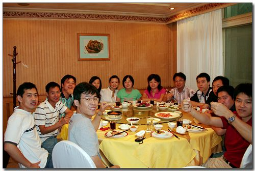

生日主题曲 @ Aug 15, 2007
8月15日，我的生日。
本想不动声色度过这个生日，可一早..甚至是午夜12点就收到祝福的短信，很感动~~此时能真正感受到被人牵挂的感觉很温暖！
15日中午，最让人感动的是午餐进行到结尾时，服务员推着生日蛋糕和香槟唱着生日歌进来的情形。不知道有多久没和同事们聚聚餐聊聊天，两年？恍如隔世，生日只是相聚的一个理由，是对往日时光的温顾知新。如今各忙各的，各有各的压力，10年后我们这帮人不知道有多少人还在这个公司工作？

电影主题曲《爱情转移》
曲：Christopher Chak 词：林夕 唱：陈奕迅
徘徊过多少橱窗 住过多少旅馆
才会觉得分离也并不冤枉
感情是用来浏览 还是用来珍藏
好让日子天天都过得难忘
熬过了多久患难 湿了多长眼眶
才能知道伤感是爱的遗产
流浪几张双人床 换过几次信仰
才让戒指义无返顾的交换
把一个人的温暖 转移到另一个的胸膛
让上次犯的错反省出梦想
每个人都是这样 享受过提心吊胆
才拒绝做爱情待罪的羔羊
会议是捉不到的月光握紧就变黑暗
等虚假的背影消失于晴朗
阳光在身上流转 等所有业障被原谅
爱情不停站 想开往地老天荒
需要多勇敢
烛光照亮了晚餐 照不出个答案
恋爱不是温馨的请客吃饭
床单上铺满花瓣 拥抱让它成长
太拥挤就开到了别的土壤
感情需要人接班 接近换来期望
期望带来失望的恶性循环
短暂的总是浪漫 漫长总会不满
烧完美好青春换一个老伴
你不要失望 荡气回肠是为了
最美的平凡
26 Responses to “生日主题曲”
2007-08-15
生日快乐，第一次沙发。
2007-08-15
Happy Birthday! beautiful and grace forever!
2007-08-15
生日快乐
2007-08-15
生日快乐!
忧伤和烦恼转移,快乐常在!
2007-08-15
HAPPYBIRTHDAY，Keeping good mood, good thoughts,good life ,good work…...
2007-08-15
happy birthday
2007-08-16
生日快乐！时间过得太快，好好生活，快乐相随：-）
2007-08-16
生日快乐
2007-08-16
生日快乐.
2007-08-16
送上一句晚到的祝福：
生日快乐，幸福的小女人！
2007-08-16
生日快乐!
2007-08-16
Your collogues look like kids. I guess that most of them weren born in 1980s.
2007-08-17
人的生活都是一个个平凡的感动和被感动的片断组成
祝你幸福
2007-08-17
生日快乐：）
天天快乐！
2007-08-17
大部分都是70年代中期的，当然也有60年代的，还真是一个80年代的人都不在午餐中呢：）
看上去年轻说明生活条件好，心态保持的好~
2007-08-17
生日快乐.
2007-08-18
偶然来到
看了你的文章和图片
感觉很充实 很有激情的生活
天天快乐
2007-08-18
生日快乐 有一首歌也很好听 陈楚生的 有没有人告诉你
2007-08-18
Happy Birthday to you!
Indeed August 15th is a very special day, not only to you, but to all the Chinese people. It is a good day to celebrate!
2007-08-19
毛主席保证我留了一个言祝你生日快乐，为什么就没有了呢。
2007-08-20
迟来的报到───Happy Birthday to you! Christina.
这么多祝福看来是感动坏了(听这首歌就知道)。肯定希望天天过生日了，还是在七夕附近。
2007-08-20
transparent :)
2007-08-20
3KU大家啦~
留言没有显示的原因我目前还不明白，这里需要点击两次，第一次预览，第二次上传。不管怎样真的感谢祝福！
BENM公司的宝贝计划可以推荐一下我们这里的宝贝么？
2007-08-25
我们公司打出的“宝贝计划”是跟遗传基因有关的，就是要打造一个没有遗传病的宝贝，当然暂时这只是科幻，实现起来非常困难，而且届时会有新的伦理危机。
2007-08-27
很显老了
2007-08-27
和哦10岁比那是老的不象样了，和我40岁比我还是很年轻哦~~谁都违反不了生理规律滴~
Leave A Reply
存档只读，评论已关闭。